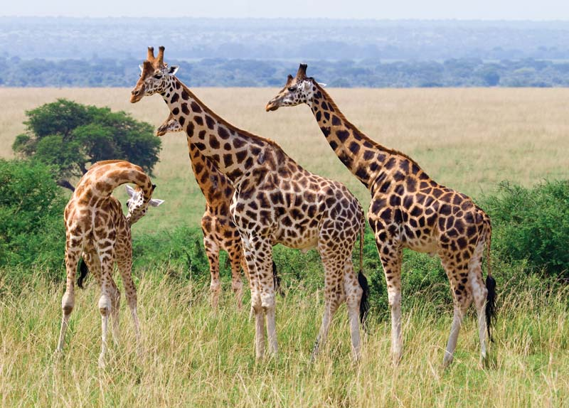

giraffe
The giraffe's chief distinguishing characteristics are its extremely long neck and legs, its horn-like ossicones, and its distinctive coat patterns. It is classified under the family Giraffidae, along with its closest extant relative, the okapi. Its scattered range extends from Chad in the north to South Africa in the south, and from Niger in the west to Somalia in the east. Giraffes usually inhabit savannahs and woodlands. Their food source is leaves, fruits and flowers of woody plants, primarily acacia species, which they browse at heights most other herbivores cannot reach.
Where can they be found?
Exhibit B4